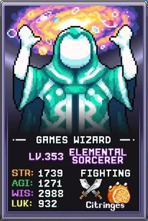
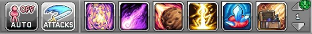
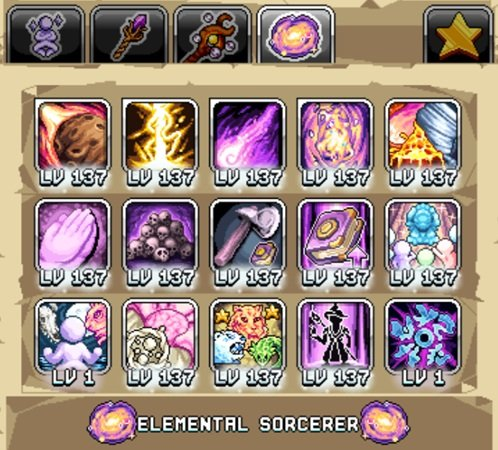
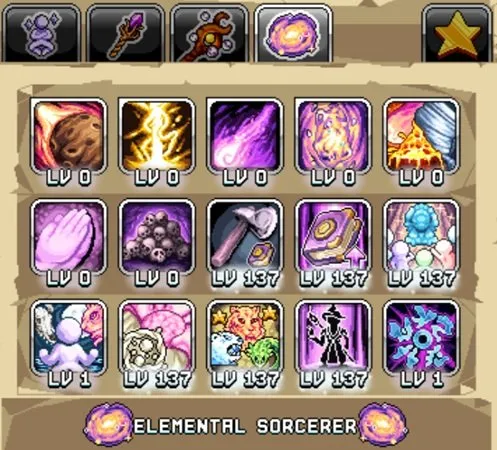
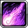
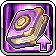
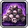
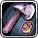
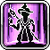

데미지 빌드 가이드 (Active 및 AFK)


데미지 빌드는 강력한 공격과 웜홀 탤런트 메커니즘을 활용해 Active(직접 플레이) 전투 획득량을 최적화합니다. 단, 한 번에 캐릭터 하나만 Active로 운용할 수 있으므로 이 탤런트 프리셋은 AFK(방치) 전투에도 사용되며, 탤런트 포인트가 부족한 경우 두 활동에 맞게 약간씩 다른 요구 사항을 반영해 활동 사이에 리셋할 수 있습니다.
Active 플레이 시 Elemental Sorcerer의 웜홀 탤런트는 다른 차원에서 지속적으로 몬스터를 소환하고 일반 몬스터의 Respawn(리스폰)을 부스트합니다. 이렇게 소환된 몬스터는 경험치와 드랍률이 높지만, 각 소환 파도마다 체력이 증가합니다. 포탈 잠재력을 극대화하기 위해 Lightning Barrage로 포탈 몬스터에게 높은 데미지를 입히고, Radiant Chainbolt와 결합해 맵의 다른 몬스터를 처치하는 것을 권장합니다. 또한 Meteor Shower, Wizard Tornado, Wizard Floor Is Lava를 추가해 최대 데미지량과 맵 클리어 잠재력을 높이세요.
Elemental Sorcerer 전투 빌드 탤런트 우선순위:

| 탤런트 | 효과 | 설명 |
|---|---|---|
| Polytheism | 탤런트 레벨에 따라 두 번째 신(God)과 연결 및 신성 포인트 획득 +% | 동시에 두 활성 신성 신 링크를 위해 유용한 스킬로, 다양한 강력한 보너스를 잠금 해제합니다. 탤런트 레벨에 따라 보조 신 링크가 결정되고 사용 가능한 신들을 순환합니다. World 5의 Omniphau(코끼리) 신 아래 서면 탤런트 레벨을 낮출 수 있습니다. 원하는 신을 얻기 위해 최소한의 탤런트 포인트만 투자하세요. 일반적인 조합으로는 포탈 진행을 위한 Arctis/Nobisect나, 연구소 밖에서 다른 활동을 자유롭게 하면서 3D 프린팅을 위한 Arctis/Harriep이 있습니다. |
 Dimensional Wormhole (Active) Dimensional Wormhole (Active) |
웜홀 몹을 소환하며 웜홀 처치당 경험치 및 드랍 +% | Active Elemental Sorcerer의 최대화 탤런트로, 지속시간과 경험치/드랍 보너스를 늘립니다. Active 플레이를 하지 않는다면 포인트를 투자하지 마세요. |
| Lightning Barrage (Active) | 다음 공격 시 번개를 떨어뜨려 데미지를 줌 | 높은 데미지량, 짧은 쿨다운, 좁은 범위 덕분에 웜홀 몬스터에 대한 핵심 데미지 탤런트입니다. 데미지량과 타격 몬스터 수를 늘리기 위해 Active 플레이에서 이 탤런트를 최대화하는 것이 중요합니다. |
 Radiant Chainbolt (Active) |
데미지를 주고 적 사이를 튕기며 튕길 때마다 데미지가 감소하는 볼트 시전 | Active Elemental Sorcerer에게 중요한 보조 탤런트로, 추가 드랍과 경험치를 위해 맵의 다른 몹들을 처치합니다. Active 전투 시 데미지량 및 적 간 튕김 수를 최대화하기 위해 최대화하세요. |
 Meteor Shower (Active) Meteor Shower (Active) |
몬스터에게 데미지를 주는 운석 비 | 맵 전체 클리어를 위한 추가 화력을 제공하는 가장 낮은 우선순위의 공격 탤런트입니다. 이 탤런트의 효과는 맵 레이아웃에 따라 다르며 일부 기기에서 렉을 유발할 수 있습니다. 다른 공격 탤런트와 달리 1포인트만으로도 충분합니다. |
| Symbols Of Beyond ~p | 레벨 1 이상인 모든 탤런트에 레벨 보너스 부여 (20레벨마다 보너스 증가) | 모든 탤런트 레벨을 높여 데미지 및 유틸리티 탤런트에 눈에 띄는 증가를 제공합니다. ES 엘리트 클래스로 전직하자마자 1포인트를 투자한 다음 위 탤런트를 확보한 후 최대화하세요. |
 Utmost Intellect |
WIS +% 및 Book of the Wise 최대 탤런트 레벨 증가 | 지혜(WIS)는 중요한 데미지 원천으로, 이 탤런트는 Book of the Wise 레벨을 통한 기본 지혜와 퍼센트 증가를 동시에 제공합니다. |
| Believer Strength | Divinity 10레벨마다 무기 파워 증가 | 무기 파워는 추가 데미지를 더하며 신성(Divinity) 레벨과 함께 성장합니다. 레벨 40이 첫 번째 체크포인트이며 이후 더 큰 데미지를 위해 100 이상에 도달할 수 있습니다. |
| The Family Guy | 표시된 가족 보너스보다 더 큰 가족 보너스 | Elemental Sorcerer 가족 보너스는 추가 탤런트 레벨로, 여기를 최대화하면 1~2개의 추가 탤런트 포인트를 제공할 수 있습니다. |
 Memorial Skulls |
1,000 WIS당 처치당 처치 수 +% | 눈에 띄는 데미지 원천을 확보한 후 전반적인 처치 수를 높여 새 포탈 잠금 해제와 Death Note 획득 속도를 개선합니다. |
 Skill Wiz |
WIS가 스킬 효율에 더 큰 영향을 줌. 또한 WIS 증가 | 추가 데미지를 위한 소량의 WIS를 제공합니다. |
 Wormhole Emperor |
모든 캐릭터에게 웜홀 처치 수 10의 거듭제곱당 데미지 +% | ES와 다른 캐릭터 모두에게 적용되는 낮은 데미지 원천으로, 증가하는 웜홀 처치 수와 함께 스케일링됩니다. |
 Shared Beliefs Shared Beliefs |
모든 캐릭터의 신성 경험치 획득 +% | 충분한 탤런트 포인트가 있을 때 여기에 포인트를 투자함으로써, AFK 획득을 청구하기 전에 Elemental Sorcerer 프리셋을 전환하지 않아도 다른 캐릭터의 신성 경험치를 극대화할 수 있습니다. |
| Chaotic Force (Active) | 기본 공격 시 일정 확률로 불덩이, 토네이도 또는 화산 시전 | Active 전투에 소폭 부스트를 주지만 낮은 발동 확률로 인해 전반적으로 가장 낮은 우선순위 탤런트 중 하나입니다. |
| Gods Chosen Children | GOD Rank당 모든 캐릭터의 데미지 +% | GOD Rank는 모든 신성 신을 잠금 해제하고 기하급수적으로 증가하는 요구 사항과 함께 대량의 신성 포인트를 소비해야 하므로 획득이 어렵습니다. 이러한 이유와 낮은 데미지 부스트로 인해 모든 전투 탤런트 중 가장 낮은 우선순위입니다. |
Divinity 빌드 가이드
신성(Divinity) 스킬 빌드는 채집 및 예배(Worship) 탤런트와 같은 프리셋에 두어야 합니다. 이 빌드는 스킬링, 연구소 또는 신성 제단에서 사용되며, 특히 이 World 5 마을 스킬을 잠금 해제할 때의 초기 진입 장벽을 극복하는 데 유용합니다.
우선순위 순으로 신성 탤런트는 다음과 같습니다:
| 탤런트 | 효과 | 설명 |
|---|---|---|
| Polytheism | 탤런트 레벨에 따라 두 번째 신과 연결 및 신성 포인트 획득 +% | 전투 빌드와 마찬가지로 일부 독특한 조합을 위해 두 번째 신과 연결하는 것이 우선순위입니다. 스킬링에 인기 있는 조합은 연구소 메인프레임에 있으면서 추가 탤런트 레벨을 얻고 AFK 획득에 큰 부스트를 받는 Snehebatu/Arctis입니다. 또는 신성 획득과 대용량 프린터 출력을 위해 연구소에 물리적으로 있는 Goharut/Harriep도 있습니다. 각 탤런트 포인트가 신성 포인트 획득을 높이므로, 원하는 두 번째 신을 활성화하면서 가능한 한 많은 포인트를 투자하여 새 신을 더 빨리 잠금 해제하세요. |
| Shared Beliefs |
모든 캐릭터의 신성 경험치 획득 +% | 모든 캐릭터에서 신성 레벨 40에 도달하는 것은 제단을 사용하지 않고도 신성 경험치를 잠금 해제하므로 중요합니다. |
| Symbols Of Beyond ~p | 레벨 1 이상인 모든 탤런트에 레벨 보너스 부여 (20레벨마다 보너스 증가) | 모든 탤런트를 강화하여 ES 탤런트 포인트의 다음 최선 옵션으로 전반적인 이점을 제공합니다. |
| Skill Wiz | WIS가 스킬 효율에 더 큰 영향을 줌. 또한 WIS 증가 | 신성은 지혜의 혜택을 받지 않지만, 이 스킬링 프리셋에서 공유되는 채집 및 예배 획득량을 향상시킵니다. |
| Utmost Intellect | WIS +% 및 Book of the Wise 최대 탤런트 레벨 증가 | 위와 마찬가지로 다른 전문 스킬을 위한 향상된 지혜 원천입니다. |
| The Family Guy | 표시된 가족 보너스보다 더 큰 가족 보너스 | 높은 Elemental Sorcerer 레벨과 높은 탤런트 레벨이 결합되면 가족 보너스를 증가시켜 추가 탤런트 레벨을 제공할 수 있습니다. |
| Wormhole Emperor | 모든 캐릭터에게 웜홀 처치 수 10의 거듭제곱당 데미지 +% | 다른 탤런트가 스킬링을 향상시키지 않으므로 남은 탤런트 포인트를 여기에 투자하여 스킬링 프리셋 기준으로 웜홀 처치 수에 따라 다른 모든 캐릭터에게 데미지 부스트를 제공할 수 있습니다. |
| Gods Chosen Children | GOD Rank당 모든 캐릭터의 데미지 +% | 위와 마찬가지로 GOD Rank를 획득했다면 스킬링 프리셋에서 모든 캐릭터에게 소소한 데미지 부스트를 제공할 수 있습니다. |